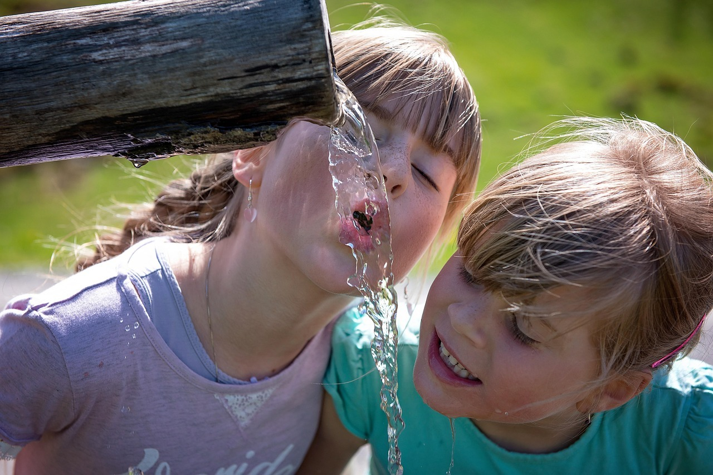
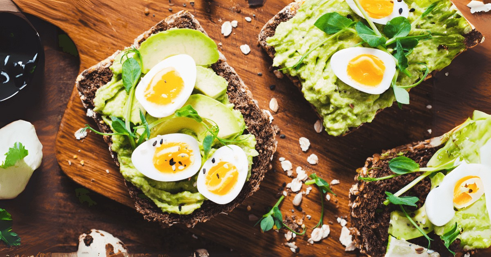
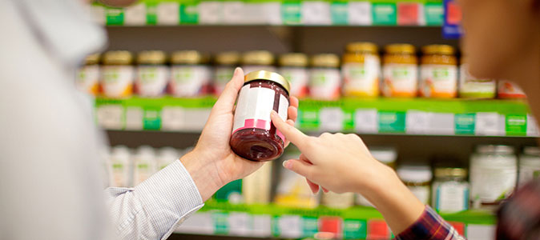
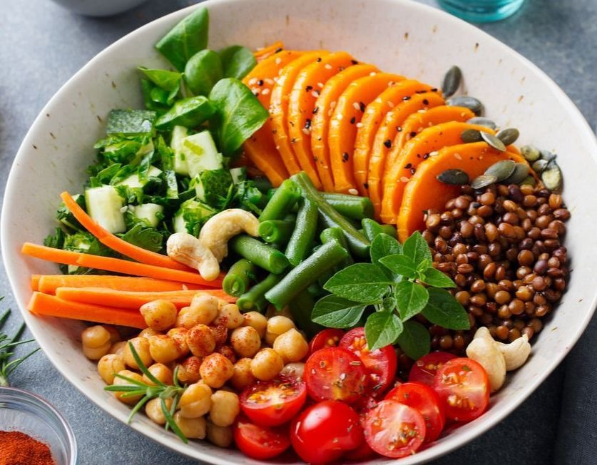
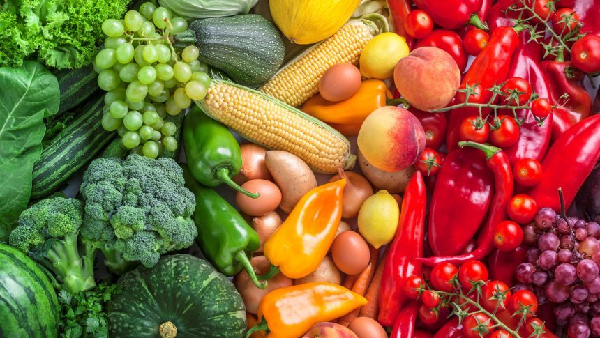
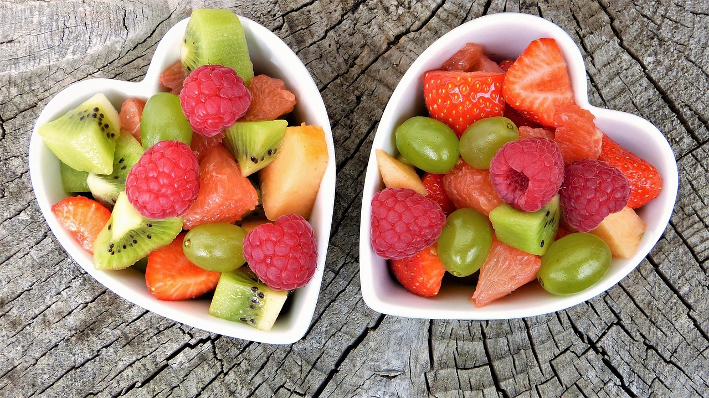

Beba água ao longo do dia
Leve uma garrafinha e crie lembretes. Sede já é sinal de desidratação leve.
Cuidados que fazem diferença
Beber água regularmente ao longo do dia mantém o corpo em equilíbrio, ajuda na digestão, melhora a concentração e o desempenho físico e mental, evita cansaço e dores de cabeça, e ainda substitui bebidas açucaradas que prejudicam a saúde.
Quanto mais cores no prato, mais nutrientes o corpo recebe. Cada cor traz vitaminas, minerais e antioxidantes diferentes que fortalecem a imunidade, aumentam a energia e ajudam no bom funcionamento do corpo. Frutas, legumes e verduras variadas também deixam as refeições mais atraentes e saborosas, tornando mais fácil manter uma alimentação equilibrada todos os dias.
Leve uma garrafinha e crie lembretes. Sede já é sinal de desidratação leve.

Adolescentes e jovens devem consumir cerca de 2 a 3 litros de água por dia, distribuídos ao longo do dia..
Beba água em intervalos durante o dia para manter o corpo ativo, a mente alerta e prevenir fadiga.

Fruta com iogurte, sanduíche integral com queijo e tomate, torrada com abacete.
A outra metade: 1/4 proteína (feijão, ovos, frango) e 1/4 carboidrato (arroz, batata, milho).

Evite produtos com lista longa de ingredientes, excesso de sódio e açúcar.

Misturar cores e texturas torna a alimentação mais atrativa e ajuda a consumir mais frutas e verduras diariamente.

Alimentos vermelhos, verdes, laranja e roxos oferecem vitaminas e antioxidantes que fortalecem a saúde e previnem doenças.

Dê prioridade a frutas, verduras, legumes e grãos integrais. Eles são ricos em nutrientes e ajudam a manter o corpo saudável.